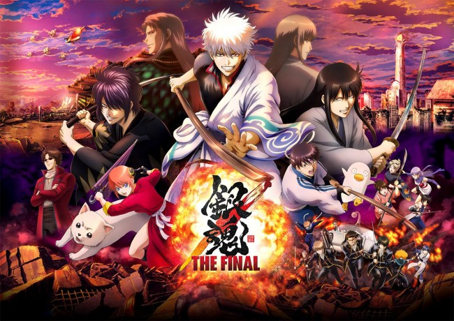
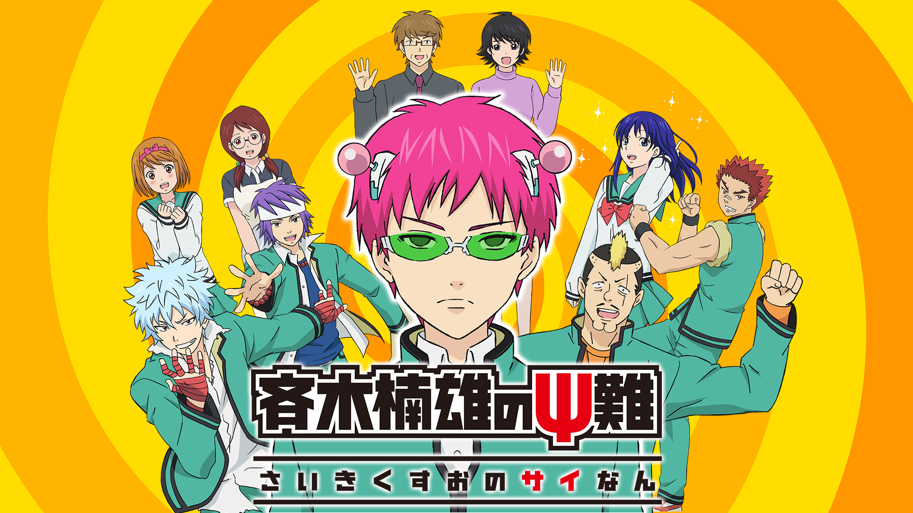

銀魂

［あらすじ］舞台は江戸末期。20年前、本当ならペリーが黒船で日本を開国させるが、天人。簡単に言うと宇宙人。その天人から国を守るため、侍が阻止しようと、戦争が起こる。その後、幕府が天人の力に恐れあっさり開国。その後、ターミナルという建造物が作られ、廃刀令などで、侍は衰退していく。そんなところに、万事屋を営む経営者。坂田銀時が主人公。ちょっとしたことがあり、志村新八と神楽が万事屋で働くことになり・・・
斉木楠雄のΨ難

ピンクの髪色に緑の眼鏡、頭には謎の装置の不思議な見た目…さらにテレパシー、サイコキネシス、瞬間移動、千里眼、透視、予知、などありとあらゆる様々な超能力を自由自在に操ることが出来るスーパー男子高校生・斉木楠雄のお話…ではなくその楠雄の個性的で少し（かなり）うるさい（わずらわしい）家族や友達、また斉木楠雄に群がる人々が繰り広げるドタバタ学園コメデイ。